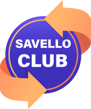

Добро пожаловать в Кэшбэк Сервис Савелло Клуб
Перед тем как начать, прочитайте, как работает расширение и какие данные оно обрабатывает.
Что делает расширение
- Показывает цветной значок при заходе на сайт магазина-партнёра: зелёный — кэшбэк активен, красный — есть возможность активации, серый — магазин не участвует.
- Активирует кэшбэк только по вашему явному клику — в попапе расширения или на кнопке «Получить кэшбэк» на сайте savelloclub.ru.
- Никогда не активирует кэшбэк автоматически и не перенаправляет вас без вашего согласия.
Какие данные обрабатываются
- Домен открытой вкладки читается локально, чтобы определить, является ли сайт партнёрским. Сами адреса страниц никуда не передаются.
- На сервер savelloclub.ru при активации уходят только идентификатор товара (
product_id) и идентификатор клика (click_id). Авторизация выполняется через ваши cookie сайта savelloclub.ru. - История посещений, личные данные и информация со сторонних сайтов на сервер не передаются.
Раскрытие affiliate
Это аффилиатное расширение. Когда вы активируете кэшбэк и совершаете покупку, мы получаем партнёрское вознаграждение от магазина и часть этого вознаграждения возвращаем вам в виде кэшбэка.
Подробнее об обработке персональных данных — в политике обработки данных.